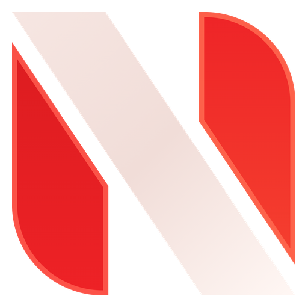
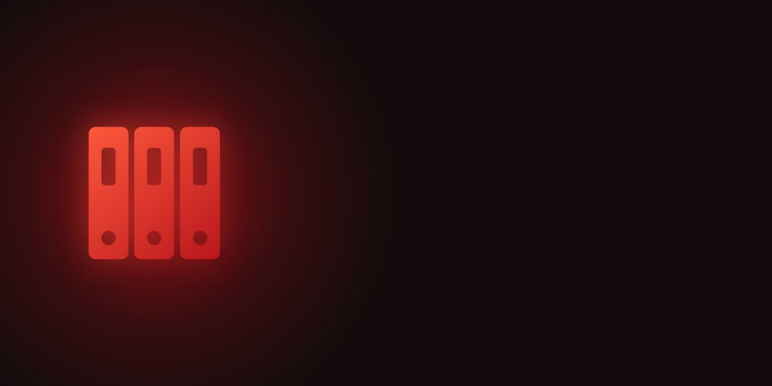
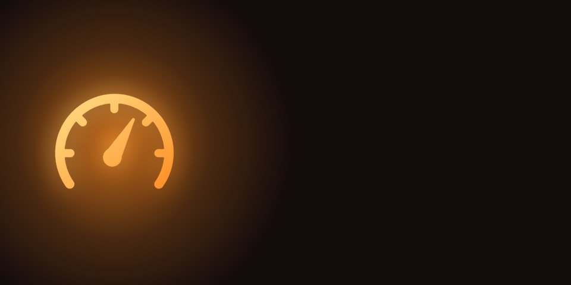
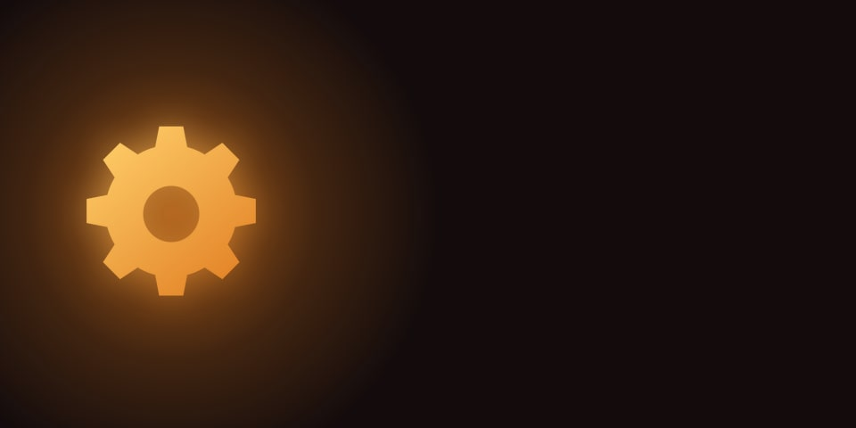

NUKE Remote
افتح NUKE GG على البيسي، وروح الإعدادات ← التطبيق ← «جوالك»، وصوّر الـ QR بكاميرا جوالك.

تحميلات ستيم
أسبوعك
تحدّى ربعك بردة الفعل
كم سرعتك؟ العب، وأرسل رقمك لربعك برابط. يلعبون نفس التحدّي من جوالهم بدون تطبيق، ويطلع مين فاز.
عدّ تنازلي للعبة
دوّر لعبة بالعربي أو الإنقليزي وضفها، ويطلع لك كم باقي لها بالثانية.
العب مع ربعك
سوّ كود لمودات لعبة، وربعك يكتبونه في NUKE GG وينزّل عندهم نفس موداتك.
صور لعبك
ألعابك
نجيب ألعابك…
وأنا جاي
كاميرا بثك
جوالك يصير كاميرا لبثك: تطلع بنافذة على البيسي، ورابط تحطه ببرنامج البث.
أزرارك
نجيب أزرارك…
أرسل للبيسي
الرابط ينفتح بمتصفح البيسي، والكلام ينحط بحافظته (الصقه بـ Ctrl+V). الصور والملفات تنحفظ بالتنزيلات ← «من الجوال».
رسالة على شاشة البيسي
تطلع فوق كل شي مع صوت، واللي قدام البيسي يرد عليك بضغطة.
تكلم من جوالك
اضغط على الزر واستمر وأنت تتكلم، وأول ما تتركه يطلع صوتك من سماعات البيسي.
ملفات البيسي
تختار أي ملف ويوصل جوالك. مع «متصل مباشرة ⚡» يوصل لين 4 جيجا (الآيفون لين 1 جيجا)، وبدونه لين 100 ميجا.
برامجك
الصوت
الصوت يطلع من
الشاشة
«طفّ الشاشة» تطفيها والبيسي شغّال، وأي حركة للماوس ترجّعها.
البلوتوث
الأغاني والفيديو
البيسي
طفّ البيسي الساعة…
تنام والبيسي يطفي لحاله بالوقت اللي اخترته. تقدر تلغيه متى ما تبي.
راقب البيسي

حالة البيسي
نقرا حالة البيسي…
كرت الشاشة
وش ماكل الجهاز؟
نشوف البرامج…
أقرب سيرفر
نقيس بنق البيسي لسيرفرات الألعاب بالخليج والعالم.
سرعة نت البيسي
ياخذ 10 ثواني تقريباً، والأفضل وأنت ما تلعب أونلاين.
الكاميرا والمايك
نشوف…
الهارديسكات
مواصفات البيسي

التنبيهات
يوصلك على جوالك: انثبّت المود، اللعبة خلصت تنزيل، تحديث للعبة عندك، لعبة صارت مجانية، نزل سعر لعبة، وتنبيهات البيسي اللي تختارها تحت.
تنبيهات الألعاب
تنبيهات البيسي
شكل التحدّي وأسبوعك
أجهزتك
البيسيات المربوطة بجوالك. تبدّل بينها من اسم البيسي فوق، أو من هنا.
حطها على الشاشة الرئيسية
تنفتح مثل تطبيق كامل بدون شريط المتصفح. بالآيفون: زر المشاركة ⬆️ ← «إضافة إلى الشاشة الرئيسية». بالأندرويد: القائمة ⋮ ← «إضافة إلى الشاشة الرئيسية».